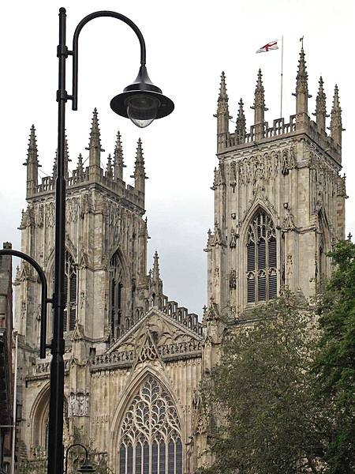
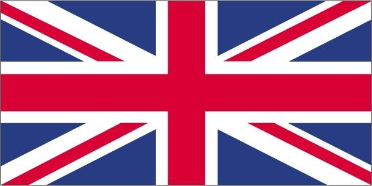

introduction
The United Kingdom has historically played a leading role in developing parliamentary democracy and in advancing literature and science. At its zenith in the 19th century, the British Empire stretched over one-fourth of the earth's surface. The first half of the 20th century saw two World Wars seriously deplete the UK's strength and the Irish Republic withdraw from the union. The second half witnessed the dismantling of the Empire and the UK rebuilding itself into a modern and prosperous European nation.
As one of five permanent members of the UN Security Council and a founding member of NATO and the Commonwealth of Nations, the UK pursues a global approach to foreign policy. The Scottish Parliament, the National Assembly for Wales, and the Northern Ireland Assembly were established in 1998.
The UK was an active member of the EU after its accession in 1973, although it chose to remain outside the Economic and Monetary Union. However, motivated in part by frustration at a remote bureaucracy in Brussels and massive migration into the country, UK citizens on 23 June 2016 voted by 52 to 48 percent to leave the EU.
The UK became the first country to depart the EU on 31 January 2020, after prolonged negotiations on EU-UK economic and security relationships had been hammered out.
 Geography
Location
location, western europe, islands which also includes one sixth of the island of ireland
Natural Resourses, the united kingdom is known for having coal, petroleom, natural gas, and gold in their locations
Area
Area, there is a percentage breakdown of the area England 53%, Scotland 32%, Wales 9%, and North ireland 6%.
land use, Agricultural land 71 percent, arable land 25 percent, permanent crops 0.2 percent, forest 11.9 percent, other 17.1 percent.
Climate
Climate, the tempature is moderate under this reigon more than half the days are overcast.
Terrain, mostly rugged hills and low mountains
Elevation, highest point Ben nevis 1,335 m, lowest point the fens -4 m
government
Government Type
Governmemt type, is a parlimentary constitutional monarchy
capital, London
Time zones 5 hours ahead of Miami florida
constitution
constitution, uses the common law system under the human rights acts of 1998
International law organization participants, ICJ jurisdiction
Executive branch
Exectutive branch, Queen elizabeth cheif of state, prime minister head of government, cabinet appointed by prime minister.
other branches Legislative branch, Judicial branch
Economy
Economic overview
economic overview, The UK, a leading trading power and financial center, is the third largest economy in Europe after Germany and France. Agriculture is intensive, highly mechanized, and efficient by European standards, producing about 60% of food needs with less than 2% of the labor force.
The UK has large coal, natural gas, and oil resources, but its oil and natural gas reserves are declining; the UK has been a net importer of energy since 2005. Services, particularly banking, insurance, and business services, are key drivers of British GDP growth.
Real GDP
Real GDP, 2,797,980,000,000 data is for 2017 dollars , the UK ranks 10 in the world
credit rating AA-
Agricultural products
Agricultural products, wheat, milk,barley, sugar, beet, potatoes, rapeseed, poultry, oats, pork, and beef
Industries, machine tools, electric power automation equipment and more.